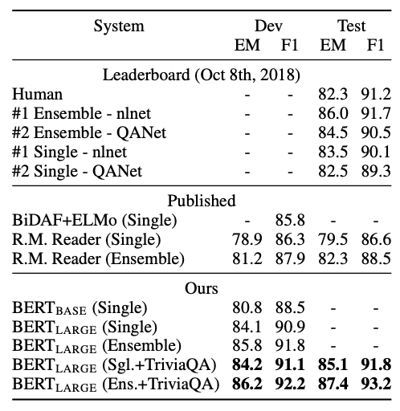

<!DOCTYPE html>
<html lang="en">

<head>

  <meta charset="utf-8">
  <meta name="viewport" content="width=device-width, initial-scale=1, shrink-to-fit=no">
  <meta name="description" content="">
  <meta name="author" content="">

  <title>研究ブログ</title>

  <!-- Bootstrap core CSS -->
  <link href="vendor/bootstrap/css/bootstrap.min.css" rel="stylesheet">

  <!-- Custom fonts for this template -->
  <link href="vendor/fontawesome-free/css/all.min.css" rel="stylesheet" type="text/css">
  <link href='https://fonts.googleapis.com/css?family=Lora:400,700,400italic,700italic' rel='stylesheet' type='text/css'>
  <link href='https://fonts.googleapis.com/css?family=Open+Sans:300italic,400italic,600italic,700italic,800italic,400,300,600,700,800' rel='stylesheet' type='text/css'>

  <!-- Custom styles for this template -->
  <link href="css/clean-blog.min.css" rel="stylesheet">

</head>

<body>

  <!-- Navigation -->
  <nav class="navbar navbar-expand-lg navbar-light fixed-top" id="mainNav">
    <div class="container">
      <button class="navbar-toggler navbar-toggler-right" type="button" data-toggle="collapse" data-target="#navbarResponsive" aria-controls="navbarResponsive" aria-expanded="false" aria-label="Toggle navigation">
        <i class="fas fa-bars"></i>
      </button>
      <div class="collapse navbar-collapse" id="navbarResponsive">
        <ul class="navbar-nav ml-auto">
          <li class="nav-item">
            <a class="nav-link" href="index.html">Home</a>
          </li>
          <li class="nav-item">
            <a class="nav-link" href="about.html">About</a>
          </li>
        </ul>
      </div>
    </div>
  </nav>

  <!-- Page Header -->
  <header class="masthead" style="background-image: url('img/post-bg.jpg')">
    <div class="overlay"></div>
    <div class="container">
      <div class="row">
        <div class="col-lg-8 col-md-10 mx-auto">
          <div class="post-heading">
            <h1>BERT: Pre-training of Deep Bidirectional Transformers for Language Understanding</h1>
            <span class="meta">Posted on May 31, 2019</span>
          </div>
        </div>
      </div>
    </div>
  </header>

  <!-- Post Content -->
  <article>
    <div class="container">
      <div class="row">
        <div class="col-lg-8 col-md-10 mx-auto">
<h2>BERT: Pre-training of Deep Bidirectional Transformers for Language Understanding</h2>
<h2>書誌事項</h2>
<p>Jacob Devlin et al. BERT: Pre-training of Deep Bidirectional Transformers for
Language Understanding. Cornel University Library. <a href="https://arxiv.org/pdf/1810.04805.pdf">https://arxiv.org/pdf/1810.04805.pdf</a>, 2018.</p>
<h2>PDFのURL</h2>
<p><a href="https://arxiv.org/pdf/1810.04805.pdf">https://arxiv.org/pdf/1810.04805.pdf</a></p>
<hr>
<h2>序論の3戦略</h2>
<h3>戦略1：研究領域の確立</h3>
<p>事前学習を行った言語モデルを用いることで, 自然言語処理の様々なタスクで精度の改善に効果があることが示されている.<br>
そのような研究には feature-basedなものとfine-tuningなものがある</p>
<h3>戦略2：先行研究の隙間</h3>
<p>次の単語を予測するような言語モデルで事前学習を行う際, 現在の予測のプロセスにおいて予測するべき未来の単語情報を用いてはいけない.<br>
このような問題に対して強力な双方向の言語モデルが必要であるが, fine-tuningのモデルとして2018年に提案されたOpenAI GPTでは, 未来の単語位置のネットワークにマスクをかけねばならず、単方向になってしまう. また, feature-basedなモデルとして2018年に提案されたELMoは双方向なモデルであるが, 順方向LSTMと逆方向LSTMを同時に学習することができない.<br>
そこで, 事前学習の方法を工夫することで強力な双方向モデルであるBERTが提案された.</p>
<h3>戦略3：研究の目的</h3>
<ul>
<li>強力な双方向言語モデルであるBERTの提案</li>
<li>11の自然言語処理のタスクに対してBERTを転移学習させることの有用性の検証</li>
</ul>
<h2>主な結果と考察</h2>
<h3>データセット</h3>
<p>GLUE：自然言語処理のためのデータセットの集合(8つのタスク)</p>
<ul>
<li>MNLI : 含意関係に関するデータセット</li>
<li>QQP : 二つの質問が同じ意味かのデータセット</li>
<li>QNLI : 質問応答データセット</li>
<li>SST-2 : 映画の感想の感情分析のデータセット</li>
<li>CoLA : 使われている英語が言語的に正しいかのデータセット</li>
<li>STS-B : ニュースの見出しと感想のペアが意味的に正しいかのデータセット</li>
<li>MRPC : オンラインニュースから抽出された分のペアが意味的に同じかのデータセット</li>
<li>RTE : 文のペアに含意関係があるかのデータセット(MNLIより小規模)</li>
</ul>
<p>SQuAD : スタンフォード大学が提供している約10万ペアのクラウドソーシングの質疑応答ペアデータセット</p>
<p>NER : 20万のアノテーションされた固有表現のデータセット</p>
<p>SWAG : 約11万の完結したペアの文例集. 文の続きを推論するためのデータセット</p>
<h3>BERT</h3>
<p><strong>BERT</strong> は様々な自然言語処理に対して汎用的に使える分散表現を計算する機構<br>
BERTでは, ラベルなどが付与されていないテキストデータから言語知識を獲得し, これを埋め込んだ単語分散表現(単語のベクトル)を計算する.<br>
この分散表現には事前に学習した知識が詰め込まれているため、タスクを解く際の手がかりが豊富となりタスクの精度向上に繋がる<br>
BERTの特にすごいところは以下の2点</p>
<ul>
<li>BERTは既存のモデルそのものを改良しなくとも、ただ前に接続するだけで精度が向上する</li>
<li>Googleの持つ大規模な計算機により獲得された分散表現なので, 入力をより優れた情報を持つ分散表現に変換できる</li>
</ul>
<p>BERTの概要は以下の図のようになる</p>
<p></p>
<p>BERTの入力は単語分散表現の列で, 出力も単語分散表現の列となる<br>
<strong>Token Embeddings</strong> : 「my」や「dog」という各単語に対応したベクトル（分散表現）<br>
<strong>Segment Embeddings</strong> : 二つの文を入力するときに、その単語がどちらの文に含まれているかを判別するための分散表現<br>
<strong>Position Embeddings</strong> : 単語が入力の中で何番目に現れているかを示す分散表現</p>
<p>また, <strong>[CLS]</strong> は文の分類問題に用いるための特殊なトークンで, <strong>[SEP]</strong> は文末を示す特殊なトークン<br>
例えば「my」という単語であれば、その単語が文の中でどのような働きをしているか、といった情報が付与された分散表現が出力される</p>
<p><strong>片方向しか情報が伝播しないネットワークよりも、両方向に情報が伝播したほうが強力に学習できそうだが, なぜ今までこのような双方向のfine-tuningモデルが提案されてこなかったのか</strong><br>
-&gt; n-1番目までの情報からn番目の単語を予測するタスクにおいて, 現在の予測プロセスの際に、予測するべき未来の単語情報を用いないようにする制約が必要<br>
しかし, BERTでは事前学習の際に2つの工夫を行うことでこの問題を解決</p>
<h4>1. マスク単語の予測</h4>
<p>入力文のうちいくつかの単語を隠し、文脈からその単語を当てるタスクを学習させる<br>
具体的には, 全体の15%を[MASK]トークンに置き換えて予測<br>
そのうち、80%がマスク、10%がランダムな単語、10%を置き換えない方針で変換する</p>
<pre class="editor-colors lang-text"><span class="syntax--text syntax--plain"><span class="syntax--meta syntax--paragraph syntax--text"><span>・my dog is hairy -&gt; my dog is [MASK]</span></span></span>
<span class="syntax--text syntax--plain"><span class="syntax--meta syntax--paragraph syntax--text"><span>・my dog is hairy -&gt; my dog is apple</span></span></span>
</pre>
<h4>2. 隣接文の予測</h4>
<p>二つの文章を与え、隣り合っているかをYes/Noで判定する<br>
文章AとBが与えられた時に、50%の確率で別の関係ない文章Bに置き換える<br>
このタスクを解くことで、BERTは単語だけでなく文全体の表現についても学習することができる</p>
<pre class="editor-colors lang-text"><span class="syntax--text syntax--plain"><span class="syntax--meta syntax--paragraph syntax--text"><span>・[CLS] the man went to [MASK] store [SEP]</span></span></span>
<span class="syntax--text syntax--plain"><span class="syntax--meta syntax--paragraph syntax--text"><span>・he bought a gallon [MASK] milk [SEP]</span></span></span>
<span class="syntax--text syntax--plain"><span class="syntax--meta syntax--paragraph syntax--text"><span>→ isNext</span></span></span>
<span class="syntax--text syntax--plain"><span></span></span>
<span class="syntax--text syntax--plain"><span class="syntax--meta syntax--paragraph syntax--text"><span>・[CLS] the man [MASK] to the store [SEP]</span></span></span>
<span class="syntax--text syntax--plain"><span class="syntax--meta syntax--paragraph syntax--text"><span>・penguin [MASK] are flight ##less birds [SEP]</span></span></span>
<span class="syntax--text syntax--plain"><span class="syntax--meta syntax--paragraph syntax--text"><span>→ notNext</span></span></span>
</pre>
<h3>結果</h3>
<h4>GLUE</h4>
<p>GLUEの計8タスクに対してBERTと既存の手法を比較したところ以下の図のようになった<br>
<br>
どのタスクにおいてもBERTのスコアが一番高くなっている<br>
BERTには, BASEとLARGEがあり, LARGEはBASEよりもパラメータ数が多いモデル</p>
<h4>SQuAD</h4>
<p>質問と答えの存在する文章をインプットとして与え, その質問の答えを正しく出力できるかというタスク</p>
<pre class="editor-colors lang-text"><span class="syntax--text syntax--plain"><span class="syntax--meta syntax--paragraph syntax--text"><span>・Input Question</span></span></span>
<span class="syntax--text syntax--plain"><span>  </span><span class="syntax--meta syntax--paragraph syntax--text"><span>Where do water droplets collide with ice crystals to form precipitation?</span></span></span>
<span class="syntax--text syntax--plain"><span class="syntax--meta syntax--paragraph syntax--text"><span>・Input Paragraph</span></span></span>
<span class="syntax--text syntax--plain"><span>  </span><span class="syntax--meta syntax--paragraph syntax--text"><span>... Precipitation forms as smaller droplets</span></span></span>
<span class="syntax--text syntax--plain"><span class="syntax--meta syntax--paragraph syntax--text"><span>  coalesce via collision with other rain drops</span></span></span>
<span class="syntax--text syntax--plain"><span class="syntax--meta syntax--paragraph syntax--text"><span>  or ice crystals within a cloud. ...</span></span></span>
<span class="syntax--text syntax--plain"><span class="syntax--meta syntax--paragraph syntax--text"><span>・Output Answer</span></span></span>
<span class="syntax--text syntax--plain"><span>  </span><span class="syntax--meta syntax--paragraph syntax--text"><span>within a cloud</span></span></span>
</pre>
<p>SQuADのみを用いて学習した場合, SQuADに加えTriviaQAというデータセットを用いてデータ拡張した場合もいずれにおいても, 既存の他のモデルより, スコアが高かった
</p>
<h4>Named Entity Recognition</h4>
<p>入力された単語を以下の5つのラベルに分類するタスク</p>
<pre class="editor-colors lang-text"><span class="syntax--text syntax--plain"><span class="syntax--meta syntax--paragraph syntax--text"><span>・Person</span></span></span>
<span class="syntax--text syntax--plain"><span class="syntax--meta syntax--paragraph syntax--text"><span>・Organization</span></span></span>
<span class="syntax--text syntax--plain"><span class="syntax--meta syntax--paragraph syntax--text"><span>・Location</span></span></span>
<span class="syntax--text syntax--plain"><span class="syntax--meta syntax--paragraph syntax--text"><span>・Miscellaneous</span></span></span>
<span class="syntax--text syntax--plain"><span class="syntax--meta syntax--paragraph syntax--text"><span>・Other(non-named entity)</span></span></span>
</pre>
<p>BERT_LARGEは既存のどの手法よりもスコアが高くなった
</p>
<h4>SWAG</h4>
<p>以下のように与えられた文章の後に続く文を推測するタスク</p>
<pre class="editor-colors lang-text"><span class="syntax--text syntax--plain"><span class="syntax--meta syntax--paragraph syntax--text"><span>A girl is going across a set of monkey bars. She</span></span></span>
<span class="syntax--text syntax--plain"><span class="syntax--meta syntax--paragraph syntax--text"><span>(i) jumps up across the monkey bars.</span></span></span>
<span class="syntax--text syntax--plain"><span class="syntax--meta syntax--paragraph syntax--text"><span>(ii) struggles onto the bars to grab her head.</span></span></span>
<span class="syntax--text syntax--plain"><span class="syntax--meta syntax--paragraph syntax--text"><span>(iii) gets to the end and stands on a wooden plank.</span></span></span>
<span class="syntax--text syntax--plain"><span class="syntax--meta syntax--paragraph syntax--text"><span>(iv) jumps up and does a back flip.</span></span></span>
</pre>
<p>BERT_LARGEは既存のどの手法よりも大幅にスコアが高くなり, 人間のスコアに近い値を出すことができた<br>
</p>
<h4>Ablation Studies</h4>
<h5>事前学習タスクの影響</h5>
<ol>
<li>事前学習の隣接文の予測を行わず, マスク単語の予測だけを行った場合</li>
<li>事前学習を行わず, 双方向ではなくLTR(Left To Right)で学習させた場合</li>
<li>2に対してBiLSTMを転移学習させた場合</li>
</ol>
<p>この3種類を, MNLI-m, QNLI, MRPC, SST-2, SQuADで試したところ以下の結果が得られた<br>
<br>
事前学習を行わないとスコアが下がることが示され, 特にLTRの場合大幅にスコアが下がり, 双方向モデルの有用性が示された</p>
<h5>モデルのサイズの影響</h5>
<p>レイヤーの数や隠れ層のサイズ, Attention headの数, マスク単語予測の精度?を変化させたときにスコアはどう変化するのかを試したところ以下のようになった<br>
<br>
データセットの数が小さくてもモデルのサイズが大きい方が精度が高くなる</p>
<h5>学習回数の影響</h5>
<p>本論文では学習を1Mステップ行っているが, 500kの時よりも精度が1%上がっているので, 学習回数を大きくすることは重要<br>
また, BERTは片方向だけであるLTRよりも学習させるのに時間がかかるがそれ以上に精度が改善される<br>
</p>
<h4>Feature-basedアプローチによるBERT</h4>
<p>BERTはFine-tuningのアプローチを取っているが, NLPのタスクの中にはそのアプローチでは解けない問題がある<br>
また, Feature-basedアプローチは計算のコストがかからないということから, BERTでFeature-basedアプローチを取った場合をNERのタスクで試してみたところ以下の結果が得られた<br>
<br>
Feature-basedのアプローチを取ったモデルでもFine-tuningのアプローチを取ったものとあまり変わらない結果を得ることができたので, BERTはどっちのアプローチでもいい結果を出すことが示された</p>
<h3>結論</h3>
<p>BERTを用いることで様々なNLPのタスクでいい結果が得られ, タスクによっては人間のスコアを超えているものもあった<br>
言語的な問題をBERTでどう扱っていくかが今後の課題</p>
<h2>キーワードと定義</h2>
<p>Ablation Studies : 下記のように各構成要素を1つだけ抜いて手法を比較することで、提案手法からどの構成要素を抜いたとしても大きく精度が低下することを示し、結果的にどの構成要素も重要であると主張する比較手法(<a href="https://qiita.com/yu4u/items/606e6e5225ad9b603269">https://qiita.com/yu4u/items/606e6e5225ad9b603269</a>)</p>
<table>
<thead>
<tr>
<th style="text-align:left"></th>
<th style="text-align:left">精度</th>
</tr>
</thead>
<tbody>
<tr>
<td style="text-align:left">既存手法</td>
<td style="text-align:left">80%</td>
</tr>
<tr>
<td style="text-align:left">提案手法（Aなし）</td>
<td style="text-align:left">86%</td>
</tr>
<tr>
<td style="text-align:left">提案手法（Bなし）</td>
<td style="text-align:left">87%</td>
</tr>
<tr>
<td style="text-align:left">提案手法（Cなし）</td>
<td style="text-align:left">87%</td>
</tr>
<tr>
<td style="text-align:left">提案手法</td>
<td style="text-align:left">90%</td>
</tr>
</tbody>
</table>
<p>perplexity : 最もよく使われる言語モデルの評価尺度で, 実際のデータに対してどれだけモデルが流暢であるというかによって評価する(<a href="https://qiita.com/jyori112/items/296d816dfaf77c0d422c">https://qiita.com/jyori112/items/296d816dfaf77c0d422c</a>)</p>

        </div>
      </div>
    </div>
  </article>

  <hr>

  <!-- begin wwww.htmlcommentbox.com -->
 <div id="HCB_comment_box"><a href="http://www.htmlcommentbox.com">Comment Box</a> is loading comments...</div>
 <link rel="stylesheet" type="text/css" href="https://www.htmlcommentbox.com/static/skins/bootstrap/twitter-bootstrap.css?v=0" />
 <script type="text/javascript" id="hcb"> /*<!--*/ if(!window.hcb_user){hcb_user={};} (function(){var s=document.createElement("script"), l=hcb_user.PAGE || (""+window.location).replace(/'/g,"%27"), h="https://www.htmlcommentbox.com";s.setAttribute("type","text/javascript");s.setAttribute("src", h+"/jread?page="+encodeURIComponent(l).replace("+","%2B")+"&mod=%241%24wq1rdBcg%24WwTegA0YvzU7KdiCG.sdV1"+"&opts=16862&num=10&ts=1563694714828");if (typeof s!="undefined") document.getElementsByTagName("head")[0].appendChild(s);})(); /*-->*/ </script>
<!-- end www.htmlcommentbox.com -->

  <!-- Footer -->
  <footer>
    <div class="container">
      <div class="row">
        <div class="col-lg-8 col-md-10 mx-auto">
          <ul class="list-inline text-center">
            <li class="list-inline-item">
              <a href="https://github.com/ryo59">
                <span class="fa-stack fa-lg">
                  <i class="fas fa-circle fa-stack-2x"></i>
                  <i class="fab fa-github fa-stack-1x fa-inverse"></i>
                </span>
              </a>
            </li>
          </ul>
          <p class="copyright text-muted">Copyright &copy; Ryo Inagaki 2019</p>
        </div>
      </div>
    </div>
  </footer>

  <!-- Bootstrap core JavaScript -->
  <script src="vendor/jquery/jquery.min.js"></script>
  <script src="vendor/bootstrap/js/bootstrap.bundle.min.js"></script>

  <!-- Custom scripts for this template -->
  <script src="js/clean-blog.min.js"></script>

</body>

</html>
